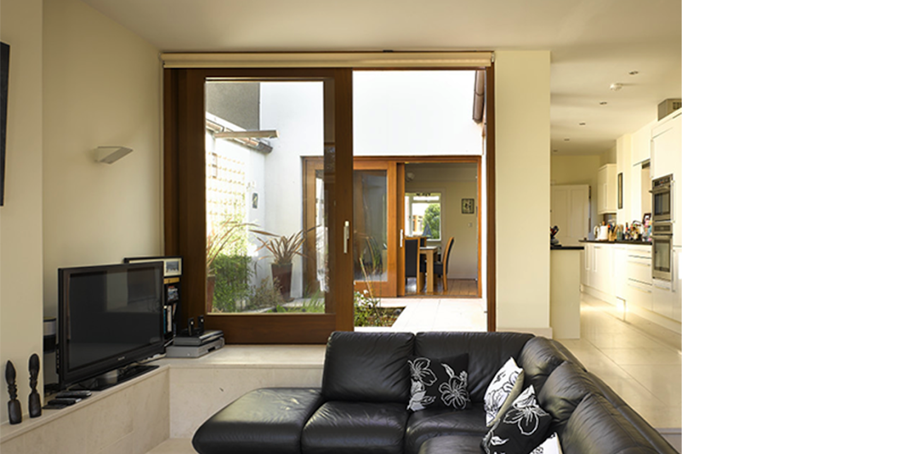

03
/
02
/
01
The owner of this house wanted to extend to the rear without compromising the existing dining room’s share of
the south light and view to the garden. The solution was to introduce a courtyard with reflecting pool between
the existing and the new, so that both light and view to the garden were enhanced. Living now revolves around
the tranquil court of still water.
Materials are white limestone, copper rainwater goods and iroko hardwood sliding doors and windows.
Back to residential